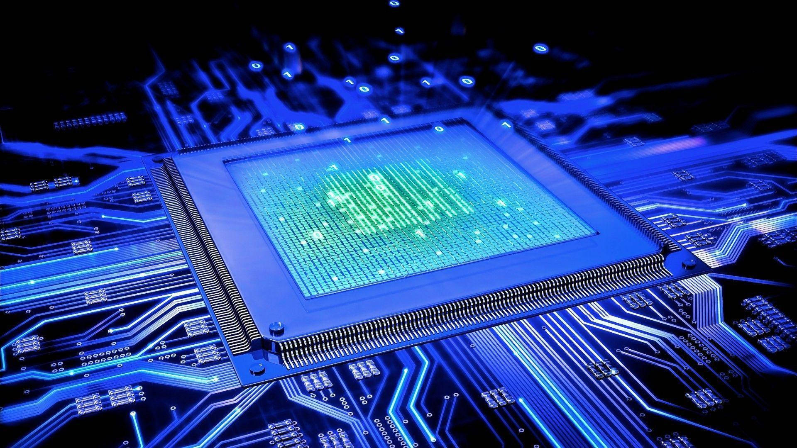

A Tecnologia da Informação (TI) é uma das áreas mais transformadoras da era contemporânea. Ela envolve o uso de sistemas computacionais, software, hardware, redes e infraestrutura digital para armazenar, processar, transmitir e proteger informações. Seu impacto é vasto e abrangente, influenciando todos os setores da sociedade — desde a saúde, educação e segurança até a indústria, comércio, entretenimento e administração pública.
Tecnologia da Informação pode ser definida como o conjunto de recursos tecnológicos e computacionais utilizados para manipular informações. Isso inclui o desenvolvimento e a manutenção de sistemas de informação, bancos de dados, redes de computadores, inteligência artificial, segurança cibernética, computação em nuvem, entre outros.
A TI vai além do simples uso de computadores. Ela envolve também a gestão estratégica da informação, permitindo que organizações tomem decisões com base em dados, automatizem processos e inovem continuamente.